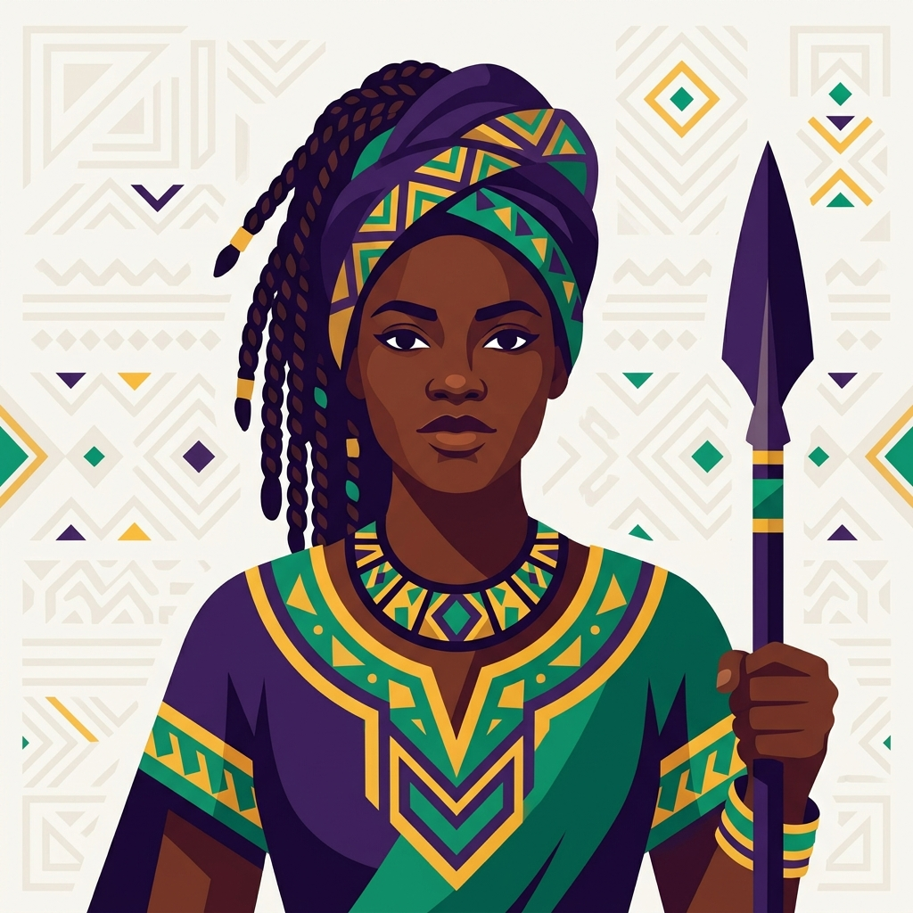
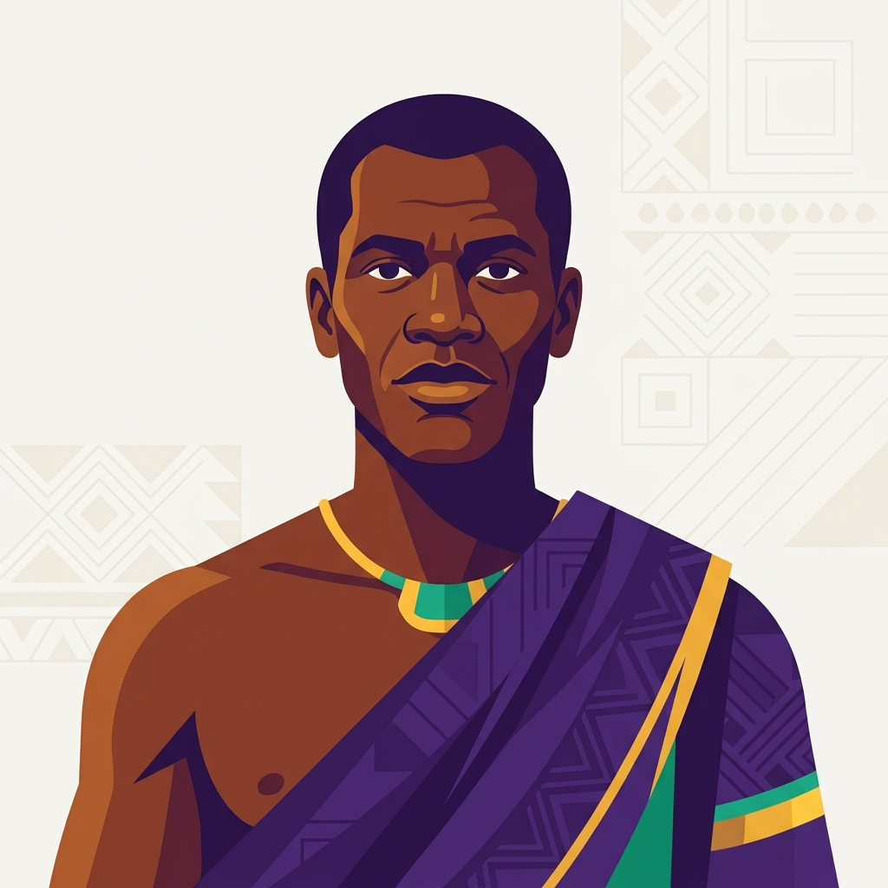
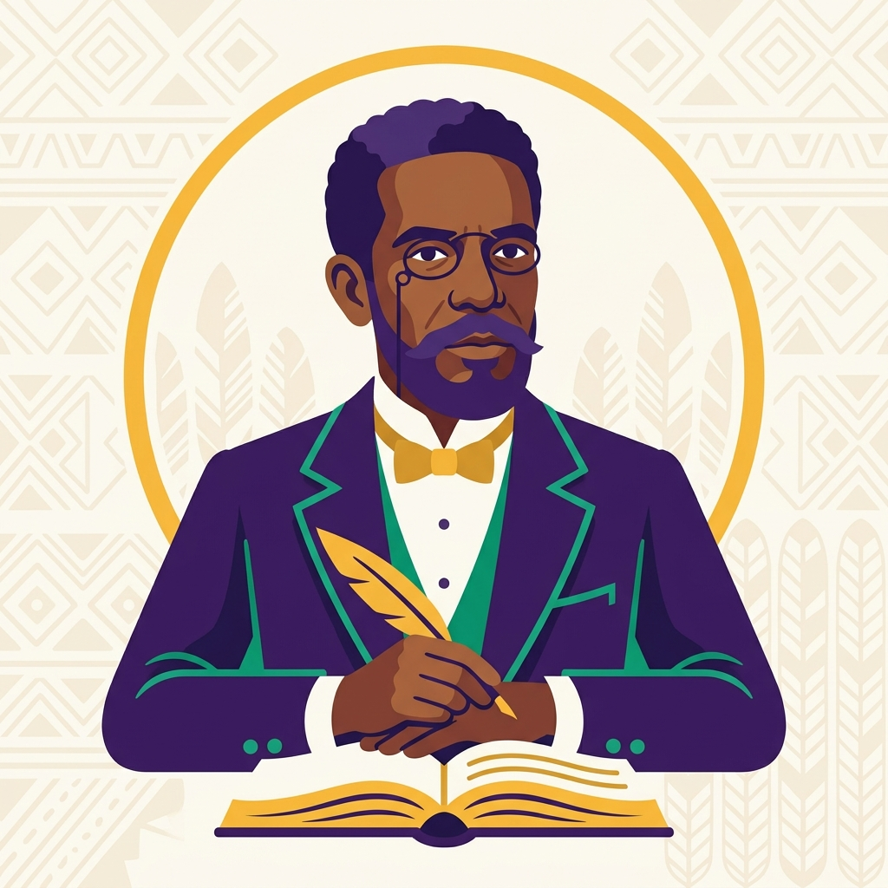
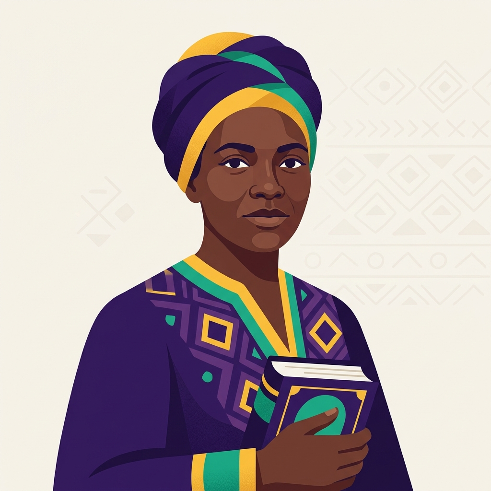
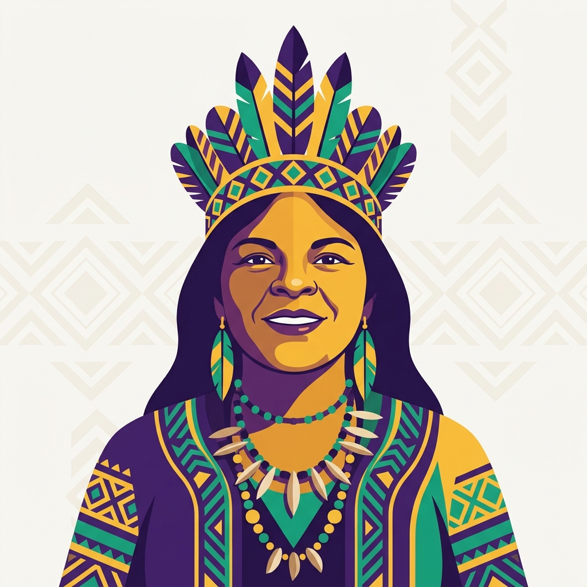

Explore a história, a cultura e os conceitos que transformam a sociedade. Descubra o poder da diversidade.
Conheça trajetórias que marcaram a história e continuam inspirando o presente.

Guerreira quilombola, símbolo de resistência e liderança na luta contra a escravidão no Quilombo dos Palmares.

Último líder do Quilombo dos Palmares, símbolo máximo da resistência negra no Brasil.

Um dos maiores escritores da literatura brasileira, autor de clássicos como "Dom Casmurro".

Considerada a primeira romancista negra do Brasil, autora de "Úrsula" (1859), obra abolicionista.

Liderança indígena e política brasileira, defensora dos direitos dos povos originários e do meio ambiente.
As contribuições científicas, filosóficas, literárias e tecnológicas das matrizes africanas e dos povos originários.
Povos africanos e indígenas desenvolveram conhecimentos avançados em astronomia, matemática, metalurgia e medicina tradicional, fundamentais para a ciência moderna.
O samba, o maracatu, o jongo e os cantos indígenas são patrimônios vivos que moldaram a identidade cultural brasileira.
A filosofia Ubuntu ("sou porque somos") e a literatura afro-brasileira e indígena nos ensinam sobre comunidade, pertencimento e humanidade.
Entenda os conceitos fundamentais para uma sociedade mais justa e igualitária.
Postura ativa de combate ao racismo e às suas estruturas, não apenas a ausência de preconceito.
Sistema de opressão enraizado nas instituições e na sociedade, que privilegia um grupo racial em detrimento de outros.
Relação de pertencimento e continuidade com as gerações passadas, suas culturas, saberes e histórias.
Presença e visibilidade de grupos historicamente marginalizados nos espaços de poder e na mídia.
Sentimento de identificação e acolhimento em relação a um grupo, comunidade ou território.
Tratar de forma justa e igualitária, considerando as diferenças e necessidades específicas de cada grupo.
Teste seus conhecimentos e mostre que você é uma mente brilhante!
10 perguntas sobre história, cultura e conceitos antirracistas.
Você acertou X de 10 perguntas.